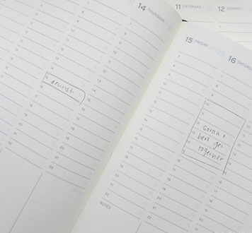
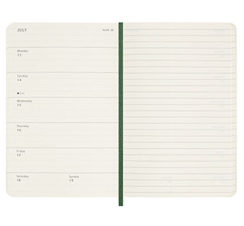
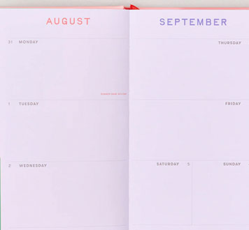
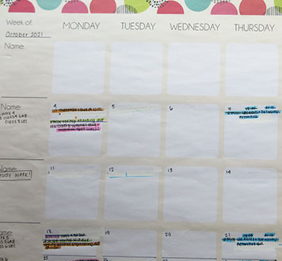

The Agenda for Your Lifestyle (a completely biased opinion)
Posted: June 26, 2026
Having the right agenda can be the thing that keeps you on top of everything happening
in your life. So here’s a quick guide to match your future agenda to your lifestyle needs.
- You plan *everything*
TL;DR: try an agenda with an hourly layout for precise planning

Leuchtturm1917's Weekly Academic Planner
If you prefer to know EXACTLY when certain events will be taking place, try a planner that gives you a view of each day by the hour.
This type of layout provides clear structure and, if you’re a visual person, a visual representation of your week by literally blocking out time.
I’ve found hourly planners more difficult to find than the typical weekly and monthly planners.
So, my best recommendations would be the Leuchtturm1917 Academic Week Planner and the Molestine Essential Diary
These options are lightweight and super portable! They’re certainly good options if you’ll need to take them with you on the go.
You might need to visit smaller, independent stationery stores to find these, as I have not seen them at big-box stores like Indigo and Staples in a long time.
- You appreciate a semi-structured plan
TL;DR: check out planners with weekly layouts and additional features

Moleskine's Classic Weekly Planner | moleskine.com
Maybe you don’t need to plan your days by the hour, but you still need a good amount of structure to keep you organised. Then a weekly overview planner might work better for you.
This will allow you to get a quick and clear overview of your week, but not get caught up in the small details of your everyday schedule.
Opt for a Moleskine Classic Weekly planner that provides notebook pages as well as a weekly agenda layout if you want some level of customisation.
They offer a variety of layouts, which can be great depending on your individual planning needs.
Nóta planners also offer great options for weekly planners that also come with fun stickers, habit trackers, a built-in to-do list template, and sections for personal reflection and mindfulness.
Both options come in a variety of designs and can be found at Indigo or smaller, independent bookstores.
- Casual reminders will do
TL;DR: aim for a basic agenda that only has the essentials (i.e., 1 week over a 2-page spread divided into 7 blank sections)

Ban.do's Classic Weekly Planner | www.bando.com
Sometimes, all you need is the time, the appointment title, and you’re good to go!
Weekly planners with a simple divided layout provide just that.
If a laid-back planner is more your style, I would recommend a Ban.do Planner, which provides a basic overview of your week, freedom to use the space as you see fit, stickers(!!), and tons of cute and unique designs from female artists and designers.
This was my go-to planner in high school! However, due to its size and thick pages, keeping this product as an at-home planner might save you some back or shoulder pain.
A Rifle Paper Co. Hardcover Pocket Planner also provides a weekly layout that’s easy to check when you’re busy.
They offer a variety of pretty designs and some of their products come with stickers!
- What day is it again?
TL;DR: monthly calendar views are clear and concise

My Dollarama monthly calendar
If you’re not a big planner, but you still want a record of what’s going on, a monthly-view calendar might be great for you!
This format will provide you with a quick view of the events you have scheduled for each month but you’re not overwhelmed by too many miniscule details.
This format can be less stressful to look at and is quite easy to keep up-to-date.
Most stationery companies offer planners with just monthly layouts.
Some of which include: Leuchtturm1917’s Monthly Planner, Rifle Paper Co.’s Academic Appointment Notebook, and the others in today’s list.
However, Dollarama has effective and affordable options that do perfectly well! You can find these in the paper/notebook section of the store.
TL;DR: try an agenda with an hourly layout for precise planning

If you prefer to know EXACTLY when certain events will be taking place, try a planner that gives you a view of each day by the hour.
This type of layout provides clear structure and, if you’re a visual person, a visual representation of your week by literally blocking out time.
I’ve found hourly planners more difficult to find than the typical weekly and monthly planners.
So, my best recommendations would be the Leuchtturm1917 Academic Week Planner and the Molestine Essential Diary
These options are lightweight and super portable! They’re certainly good options if you’ll need to take them with you on the go.
You might need to visit smaller, independent stationery stores to find these, as I have not seen them at big-box stores like Indigo and Staples in a long time.
TL;DR: check out planners with weekly layouts and additional features

Maybe you don’t need to plan your days by the hour, but you still need a good amount of structure to keep you organised. Then a weekly overview planner might work better for you.
This will allow you to get a quick and clear overview of your week, but not get caught up in the small details of your everyday schedule.
Opt for a Moleskine Classic Weekly planner that provides notebook pages as well as a weekly agenda layout if you want some level of customisation.
They offer a variety of layouts, which can be great depending on your individual planning needs.
Nóta planners also offer great options for weekly planners that also come with fun stickers, habit trackers, a built-in to-do list template, and sections for personal reflection and mindfulness.
Both options come in a variety of designs and can be found at Indigo or smaller, independent bookstores.
TL;DR: aim for a basic agenda that only has the essentials (i.e., 1 week over a 2-page spread divided into 7 blank sections)

Sometimes, all you need is the time, the appointment title, and you’re good to go!
Weekly planners with a simple divided layout provide just that.
If a laid-back planner is more your style, I would recommend a Ban.do Planner, which provides a basic overview of your week, freedom to use the space as you see fit, stickers(!!), and tons of cute and unique designs from female artists and designers.
This was my go-to planner in high school! However, due to its size and thick pages, keeping this product as an at-home planner might save you some back or shoulder pain.
A Rifle Paper Co. Hardcover Pocket Planner also provides a weekly layout that’s easy to check when you’re busy.
They offer a variety of pretty designs and some of their products come with stickers!
TL;DR: monthly calendar views are clear and concise

If you’re not a big planner, but you still want a record of what’s going on, a monthly-view calendar might be great for you!
This format will provide you with a quick view of the events you have scheduled for each month but you’re not overwhelmed by too many miniscule details.
This format can be less stressful to look at and is quite easy to keep up-to-date.
Most stationery companies offer planners with just monthly layouts.
Some of which include: Leuchtturm1917’s Monthly Planner, Rifle Paper Co.’s Academic Appointment Notebook, and the others in today’s list.
However, Dollarama has effective and affordable options that do perfectly well! You can find these in the paper/notebook section of the store.